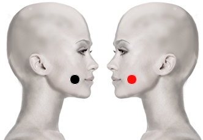

Escabiosis o sarna
Par
lengua - lengua

Generalidades:
Sarcoptes scabiei var. hominis (Parásito)
Síntomas: Problemas cutáneos tipo dermatitis que provoca ampollas y picazón. Acné, espinillas o barros. Causa la alopecia areata (se cae el pelo por mechones). Se confunde con Psoriasis. Se trasmite por el pelo de animales. Al asociarse da falso cancer de lengua o faringue. Si se asocia con:
• Tiroides - Bulbo, genera piojos
• Pineal - Cerebelo, ayuda en el tratamiento de la alopecia (caída de cabello)
Transmisión
Se transmite por el pelo o pelaje de los animales: gatos, perros. También por contacto cercano, contacto sexual, ropa de cama, vestimenta. Por lo mismo es importante revisar a las personas cercanas al paciente.